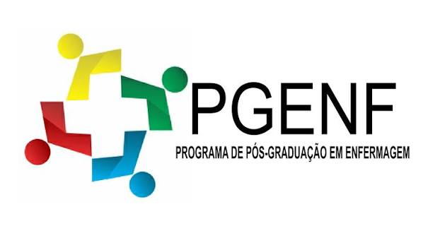

Saber fazer com propósito
Tecnologia articula conhecimento científico e experiência prática para planejar, produzir, utilizar, avaliar e aperfeiçoar uma intervenção.
Santos, 2016 · Nietsche et al., 2005
PGEnf/UFRN · Mestrado e Doutorado · 2026.2
Uma leitura integrada da tecnologia como saber, processo, relação e produto — do encontro de cuidado à inovação no SUS.
Explorar síntese ↓Ponto de partida
Nas leituras, tecnologia aparece como conhecimento aplicado, produto e processo. Ela começa na identificação de uma necessidade, organiza saberes e práticas e só ganha sentido quando transforma uma situação concreta de saúde.
Tecnologia articula conhecimento científico e experiência prática para planejar, produzir, utilizar, avaliar e aperfeiçoar uma intervenção.
Santos, 2016 · Nietsche et al., 2005Pode resultar em equipamento, protocolo, método, sistema de informação, prática educativa ou nova organização do trabalho. A materialidade é apenas uma de suas expressões.
Santos, 2016Toda tecnologia redistribui atenção, poder, tempo e recursos. Perguntar para quem, por quê e com quais efeitos é parte do próprio trabalho tecnológico.
Collière, cap. 13 · Lorenzetti et al., 2012A técnica é o modo de usar um instrumento. Sem compreender finalidade, limites e consequências, o gesto pode virar rotina desconectada da necessidade da pessoa.
Collière, cap. 13Inventar cria algo novo; inovar exige introduzir e sustentar a novidade na prática social ou produtiva, com valor demonstrável para o cuidado.
Koerich et al., 2011Quem recebe o cuidado não é consumidor passivo: participa da produção da saúde, interpreta informações e constrói autonomia nas decisões.
Santos, 2016Merhy e o trabalho vivo em ato
Duras, leve-duras e leves não formam uma hierarquia. Uma assistência segura depende da combinação situada entre infraestrutura, saber profissional e encontro humano.
Materializam-se em objetos e estruturas.
São saberes estruturados que orientam a decisão.
Acontecem no encontro e na produção de relações.
Nietsche et al. e as anotações da turma
A tipologia educacional, assistencial e gerencial ajuda a reconhecer produções que muitas vezes permanecem invisíveis por não assumirem a forma de máquinas.
Conjunto sistemático de conhecimentos, procedimentos e recursos que permite planejar, executar, acompanhar e avaliar processos educativos formais e informais. Educador e educando participam ativamente, com criatividade, sensibilidade e reflexão.
Saberes, métodos e ações usados para apoiar, manter e promover o processo de viver nas situações de saúde e doença. Deve combinar evidência, sensibilidade, ética, solidariedade e participação da pessoa cuidada.
Processo sistematizado e testado de planejamento, execução e avaliação para organizar a assistência e os serviços. Articula pessoas, materiais, informação e decisões, buscando qualidade sem separar gestão e cuidado.
Collière — Promover a vida
“Cuidar não pode ter sentido se a utilização das técnicas não se mantiver integrada no processo relacional.”Collière, capítulo 13
A pessoa, a família ou o grupo é a primeira fonte de conhecimento. Ver, escutar e compreender a linguagem cotidiana evita que a classificação clínica apague a singularidade. O corpo de quem cuida — mãos, ouvido, olhar, presença — continua sendo o primeiro instrumento do cuidado.
Da necessidade ao valor social
Uma boa ideia só se torna inovação quando é cocriada, testada, avaliada, incorporada com segurança e acompanhada no uso real.
Necessidade observada no cotidiano do cuidado, do ensino ou da gestão.
Usuários, profissionais, pesquisadores e outros campos constroem a resposta.
Viabilidade, segurança, efetividade, equidade e experiência são examinadas.
Consequências clínicas, econômicas, sociais e éticas subsidiam a incorporação no SUS.
Registro, autoria, capacitação e monitoramento sustentam uso responsável e melhoria contínua.
Santos, 2016 · Koerich et al., 2011 · PNGTS/REBRATS
Produção tecnológica brasileira
O levantamento no INPI entre 1990 e 2009 mostra uma produção ligada às necessidades cotidianas do cuidado, ao mesmo tempo em que revela baixa participação de enfermeiros na autoria formal das patentes.
Síntese crítica
Comece pela necessidade de saúde e pela experiência de quem vive o problema. Uma solução tecnicamente sofisticada pode ser irrelevante se não responder ao contexto real.
Observe se o recurso permite compreender, decidir e agir, ou se cria dependência desnecessária, vigilância excessiva ou exclusão.
Acolhimento, escuta, conhecimento clínico, coordenação e educação sustentam o uso de qualquer equipamento. Sem elas, a tecnologia dura perde efetividade.
Além de eficácia e custo, considere segurança, equidade, aceitabilidade, efeitos organizacionais, dimensão ética e impacto na vida cotidiana.
Leituras incorporadas
As 18 primeiras entradas correspondem aos arquivos enviados. As demais preservam referências do HTML original, fontes complementares citadas e anotações da turma. Títulos bibliográficos são mantidos no idioma de publicação.